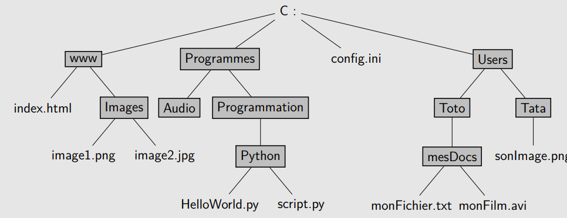
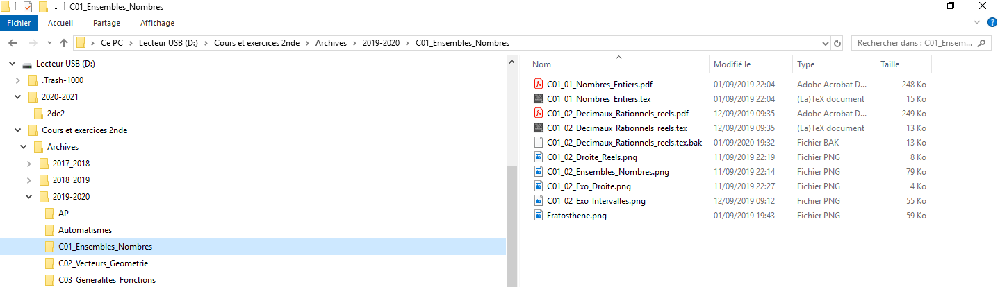
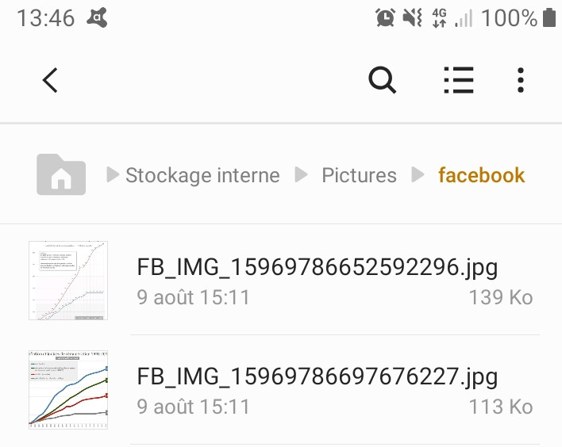
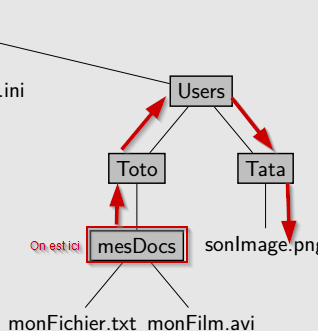

Arborescence des fichiers et des dossiers
Les fichiers informatiques
Définitions
Fichier informatique
Un fichier informatique est un ensemble de données cohérentes réunies, c'est-à-dire une suite de chiffres binaires dont l'ordre possède une signification pour un ou des programmes informatiques. Un fichier informatique est enregistré dans une mémoire de stockage (disque dur local ou réseau, clé USB ou carte mémoire Flash, CD/DVD, ... ) afin de pouvoir lire et/ou modifier les données qui y sont écrites.
Un fichier informatique est repéré par son nom, qui possède souvent, mais pas toujours, la structure suivante :
nom.extension
où le nom est une suite de caractères quelconques, et l'extension est une suite de deux, trois ou quatre lettres pouvant donner une idée du contenu du fichier.
Remarques
- Un nom de fichier peut n'avoir aucune extension, et peut même n'être écrit qu'avec des espaces... Mais c'est peu recommandé.
- Les programmes informatiques sont eux aussi des fichiers (ou des ensembles de fichiers) qui sont lus par le système d'exploitation.
- Le système d'exploitation est aussi un ensemble de fichiers.
- On peut généralement ouvrir un fichier informatique avec un éditeur de texte. Mais le contenu sera illisible par un être humain.
- L'organisation de tous les fichiers, appelée \textit{système de fichiers}, dépend du système d'exploitation (Windows, Unix, Linux, etc)
Les extensions
Utilité des extensions
Sous les systèmes windows, le système d'exploitation peut être configuré de manière à sélectionner automatiquement( c'est-à-dire par double-clique ) un programme pour ouvrir un type de fichier, en fonction de son extension.
Ainsi, généralement, pour les fichiers portant l'extension .jpg, le système d'exploitation sera configuré de manière à ouvrir avec un logiciel visionneur d'image, ou bien un éditeur d'image.
Remarques
- Il est tout à fait possible de changer le logiciel avec lequel on ouvre un fichier, grâce au menu contextuel
Ouvrir avec. - Certaines extensions de fichiers ne sont pas reconnues par le système d'exploitation. Ce sera par exemple le cas avec les sauvegardes de l'application
frisechrono.fr. Dans ce cas, il est nécessaire de d'abord démarrer le logiciel ou l'application, puis utiliser le menu `Ouvrir` de celui-ci pour chercher le fichier à ouvrir. - ⚠ En changeant l'extension d'un fichier, on ne change pas fondamentalement les données. Par contre on risque d'avoir un fichier illisible !
Connaître les différentes extensions
Compléter le tableau suivant :
| Types de fichiers | Extensions possibles | Remarques |
|---|---|---|
| Images compressées | ||
| Images brutes | ||
.avi, .mp4, .wmv, .vob |
||
| Textes formatés | ||
| Textes bruts | ||
.zip, .7z, .gz |
||
.pdf |
||
| Exécutables windows | ||
| Sons compressés | ||
| Sons bruts | ||
.html, .css, .js, .py |
| Types de fichiers | Extensions possibles | Remarques |
|---|---|---|
| Images compressées | .png, .jpg, .gif |
A utiliser sur le net |
| Images brutes | .raw, .bmp, ... |
Quand on traite des images |
| Vidéos | .avi, .mp4, .wmv, .vob |
Selon le support |
| Textes formatés | .doc, .odt |
Les fichiers de suites offices |
| Textes bruts | .txt, .csv |
Des fichiers ne contenant que des caractères |
| Archives | .zip, .7z, .gz |
Pour créer un ficheir à partir de plusieurs |
| Documents portables | .pdf |
Multiplateforme, simple à transmettre, mais compliqués à modifier |
| Exécutables windows | .exe, .msi |
Danger ! Attention, il faut savoir ce qu'on fait quand on ouvre un de ces fichiers |
| Sons compressés | .mp3,.ogg |
petits mais certaines fréquences sont absentes |
| Sons bruts | .wav, .raw |
peuvent être conséquents |
| Code informatiques | .html, .css, .js, .py |
ce ne sont que des fichiers textes |
Méta-données
Méta-données d'un fichier
Non seulement un fichier contient des données brutes ( la vidéo en question, le texte, etc. ), mais il contient aussi des méta-données (certaines informations concernant les informations) - telles que, suivant le système de fichier, la longueur du fichier, son auteur, les personnes autorisées à le manipuler, ou la date de la dernière modification.
Savoir lire les informations
On considère l'image suivante, capture d'écran faite sur un système d'exploitation Windows.

- Quelles sont les extensions présentes de fichiers images ?
- Lesquels de ces fichiers ne peuvent être ouverts par double-clic ?
- Deux fichiers peuvent-ils avoir le même nom mais pas la même extension ?
- Quel est le plus ancien fichier ?
- Quel est celui qui a été modifié le plus tard ?
- Quelle est la nature des deux plus gros fichiers ?
-
Il y a :
- des fichiers
.gif - des fichiers
.pnget.jpg(images cçompressées) - des fichiers
.bmp(images brutes)
- des fichiers
-
Le fichier
genereBMP.pyne peut pas être ouvert par double-clique. On le voit car il n'est associé à aucun icône d'application. - Oui, il y a les fichiers
N1_Images_NB_Gris.pdfetN1_Images_NB_Gris.tex. - Le fichier
Matrice_RGB2.jpgqui date du 17/02/2020. - Le fichier
N1_Images_NB_Gris.pdfà 22h09. - Les deux plus gros fichiers sont des fichiers images compressés (
.jpg).
Arborescence des fichiers
Dossiers et arborescence
Dossiers informatiques
Un dossier informatique (ou répertoire, directory en anglais) est un fichier particulier qui contient les références à d'autres fichiers.
Dans tous les système de fichier, chaque fichier ou dossier est référencé par un autre dossier, appelé parent du fichier ou du dossier correspondant.
Un tel système forme une hiérarchie, appelée arborescence, dont le point d'entrée est appelé répertoire racine.
Exemple : Arborescence complète dessinée sous la forme d'un arbre

Lire une arborescence
A partir de l'arborescence précédente :
- Le répertoire racine est ?
- Le dossier parent de
Programmationest ? - Le dossier
Userspossède deux enfants qui sont ? - Le dossier
wwwpossède combien de références ?
- Le répertoire racine est C:.
- Le dossier parent de
Programmationest Programmes. - Le dossier
Userspossède deux enfants qui sont Toto et Tata. - Il en possède deux : le fichier
index.htmlainsi que le répertoireImages.
Chemin absolu
Chemin absolu d'un fichier ou d'un dossier
Donner le chemin absolu d'un fichier ou d'un dossier, c'est donner l'ensemble des dossiers traversés depuis le répertoire racine pour atteindre ce fichier ou dossier.
Remarques
Pour séparer des dossiers, on utilise un caractère spécifique :
- sous windows : l'« antislash » ++backslah++;
- sous système Unix : le « slash » /.
Exemples
-
On considère le chemin absolu suivant sur un système windows :
C:\Windows\System32\avifile.dll- La cible est
avifile.dll - Le répertoire racine est
C: - Le répertoire parent de
avifile.dllestSystem32. - Le répertoire parent de
System32estWindows. - Le répertoire parent de
Windowsest le répertoire racine
- La cible est
-
On considère maintenant le chemin absolu suivant sur un téléphone Android :
/InternalStorage/Pictures/facebook/FB_IMG_352.jpg- La cible est
FB_IMG_352.jpg. - Le répertoire racine est
/(c'est bizarre mais c'est comme ça avec les systèmes UNIX). - Le répertoire parent de
facebookestPictures. - Le répertoire parent de
PicturesestInternalStorage.
- La cible est
A partir de l'arborescence exemple
On considère l'arborescence dessinée sous la forme d'un arbre :
- Quelle est l'adresse absolue du fichier
image2.jpg? - Quelle est l'adresse absolue du dossier
Audio? - Quelle est l'adresse absolue du fichier
config.ini?
C:\www\Images\image2.jpgC:\Programmes\AudioC:config.ini
A partir d'une arborescence Windows réelle
On considère la capture d'écran ci-dessous :

- Quel est le répertoire racine de cette arborescence ?
- Quelle est l'adresse absolue du fichier
Eratosthene.png? - Combien de sous-répertoires (ou sous-dossiers, ou répertoires enfants) possède le dossier
2020-2021? - Voit-on dans l'arborescence les fichiers contenus dans le répertoire
2de2?
D:D:\Cours et exercices 2nde\Archives\2019-2020\C01_Ensembles_Nombres\Eratosthene.png- Un seul :
2de2 - Non
Arborescence Android
On considère la capture d'écran ci-dessous :

Quelles sont les informations disponibles concernant l'arborescence des fichiers sur cette capture d'écran ?
Il y a deux fichiers images, situés dans le dossier dont l'adresse absolue est :
/Stockage interne/Pictures/facebook/
Chemin relatif
Chemin relatif d'un fichier ou d'un dossier}
Il est possible de donner le chemin relatif vers un fichier ou un dossier à partir d'un autre dossier de la même arborescence.
Pour cela il est parfois nécessaire de remonter dans les répertoires parents. Le nom du répertoire parent n'étant pas connu par le répertoire courant, on utilise la convention .. (deux points) pour signifier qu'il faut remonter d'un parent vers la racine.
Exemple
Dans l'exemple d'arborescence dessinée, si on se trouve dans le répertoire mesDocs, alors l'adresse relative du fichier sonImage.png est :
..\..\Tata\sonImage.png

- le premier
..permet de remonter dans le dossierToto. - le second
..permet de remonter dans le dossierUsers - Ensuite on descend normalement dans l'arborescence.
Chemins relatifs
Toujours dans l'arboprescence dessinée :
- Quelle est l'adresse relative du fichier
image1.pngpar rapport àindex.html? - Quelle est l'adresse relative du fichier
HelloWorld.pypar rapport au fichierindex.html? - Quelle est l'adresse relative du fichier
config.inipar rapport au fichiermonFichier.txt?
Images/image1.png(Inutile de remonter l'arborescence,index.htmlest danswwwtout comme le dossierImages)...\Programmes\Programmation\Python\HelloWorld.py..\..\..\config.ini